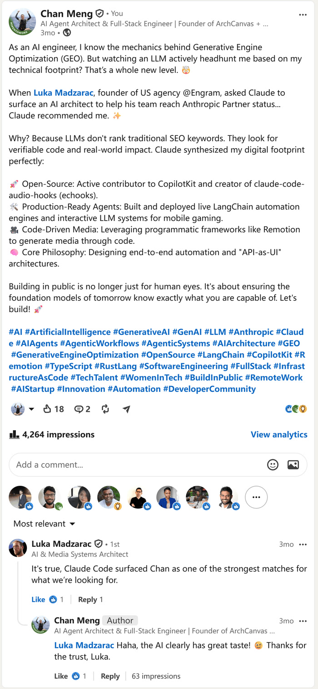

It's true, Claude Code surfaced Chan as one of the strongest matches for what we're looking for.Luka MadzaracFOUNDER, ENGRAM · LINKEDIN REPLY
A plain-text career record written for language models, generated from one data source.
Person, Service and FAQ schema, so search engines and agents read the same facts.
A Claude Code skill that mirrors JS-heavy pages as Markdown AI crawlers can cite.
README, CV, LinkedIn copy and site all built from the same YAML shards.